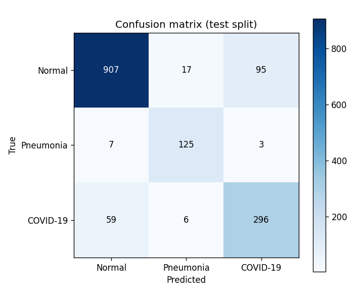
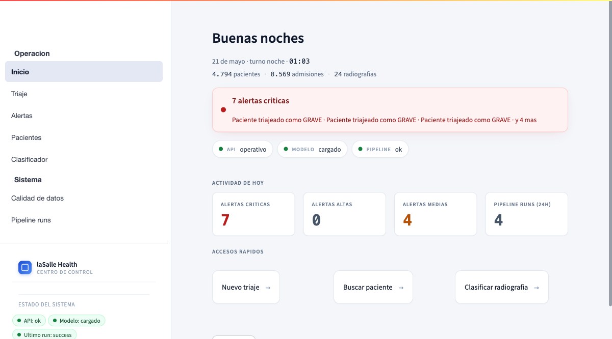
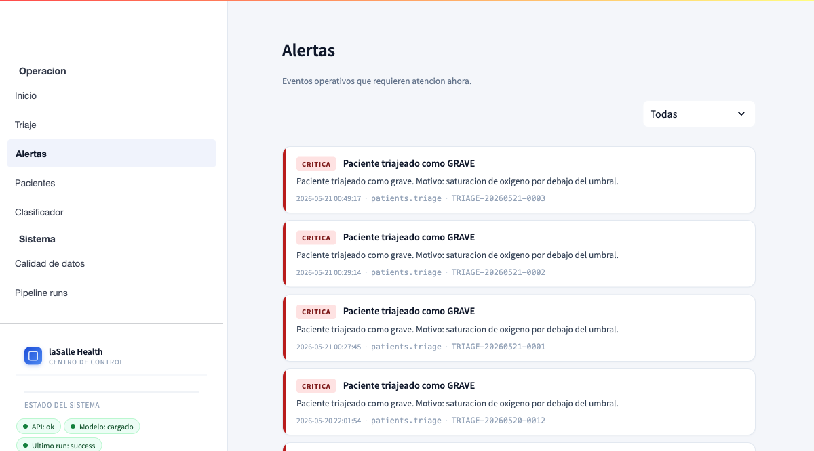
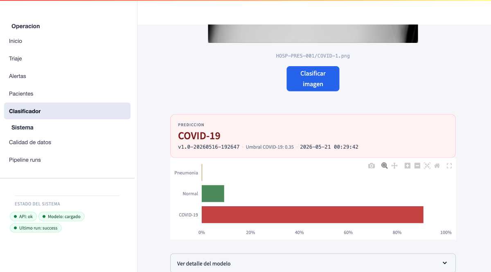

Tenian muchos datos clinicos pero ninguna herramienta para convertirlos en informacion util.
Todo a mano: ingestar CSVs, validar, generar informes diarios. Procesos repetitivos sin tocar.
El operador que entra a trabajar no tiene un panel que le diga "¿que requiere mi atencion ahora?". Va a ciegas.
Ayudamos al medico. No le sustituimos. La decision clinica sigue siendo humana. Nuestro sistema le da informacion y sugerencias — el profesional decide. No es un disclaimer al final, es lo que condiciona cada decision tecnica.
| Eje del enunciado | Entregado |
|---|---|
| Almacenes heterogeneos | 3 — MongoDB (pacientes) · SQLite (auditoria pipeline) · MinIO (imagenes) |
| Paradigmas de IA | 2 — CNN custom + reglas IF-THEN |
| Mecanismos de automatizacion | 4 — informes + alertas + watcher + ingester |
| Framework distribuido (Spark / Dask / Beam) | PySpark |
| API REST documentada | FastAPI + Swagger, 17 endpoints |
| Dashboard con visualizacion | Streamlit, 7 vistas, API-only |
| Despliegue con un solo comando | docker compose up · < 1 min |
| Vibe Coding + SDD + diario IA | 6 specs · 10 ADRs · 31 sesiones IA |
~50 s · si ya estaba caliente, ~1 s
covid_threshold_0.35
Si el modelo ve un ≥ 35% de probabilidad de COVID → decimos COVID.
Si no → elegimos entre Normal y Neumonía.
Es como bajar el listón del detector de humo: salta antes, pillamos más fuegos reales. A cambio, alguna falsa alarma. En hospital, prefieres falsas alarmas a contagiosos sueltos.
El modelo es el mismo. Los pesos son los mismos. Solo cambia la regla de decisión. Cambiar de 0,35 a otro valor → editar una constante. Cada predicción guarda qué regla se aplicó. ADR-010.
| Métrica | Sin regla | Con regla 0,35 | Cambio |
|---|---|---|---|
| Acierto general | 0,8719 | 0,8766 | +0,5 pp |
| Equilibrio por clase | 0,8456 | 0,8594 | +1,4 pp |
| COVID detectados (de los enfermos reales) |
0,6953 | 0,8199 | +12,5 pp |
| Precisión COVID (qué % de los que llamamos COVID lo son) |
0,8071 | 0,7513 | −5,6 pp |
| Contagiosos que se escapan | 110 / 361 | 65 / 361 | −45 casos |
No tenemos un dataset con la gravedad real de cada paciente (nadie nos dijo "este es grave, este leve"). Si entrenamos un modelo con etiquetas que nos hemos inventado, el modelo aprende nuestras opiniones, no medicina. Por eso usamos reglas escritas. ADR-008.
6 reglas para grave · 5 para medio · leve por defecto. Cada decisión devuelve qué reglas saltaron (ej: "saturación de O₂ por debajo de 92"). El humano ve por qué se clasificó así.
DecisionTreeClassifier o RandomForestClassifier de scikit-learn. Un arbol de decision es equivalente a un conjunto de reglas IF-THEN, solo que los umbrales se aprenden de datos.
SpO2 = 85 → GRAVE.
Un comando genera el informe del día en Markdown. Si lo ejecuto 2 veces el mismo día, el fichero es idéntico (mismo contenido bit a bit). No inventa números entre ejecuciones.
3 tipos: pipeline ha fallado · calidad de datos baja · paciente grave en triaje. Se calculan al pedirlas, no se guardan en una tabla aparte. ADR-009.
Meto un CSV en data/incoming/ y el pipeline arranca solo. Sin clicar nada, sin ejecutar comandos.
Las radiografías PNG se suben automáticamente a su almacén (MinIO) y se asocian al paciente. Cero pasos manuales.
El operador deja de mirar logs. El sistema le avisa de lo que requiere atención, en lugar de hacerle buscarlo.



Estas capturas son el plan B si la demo falla en directo. Y si la API se cae durante la demo, el dashboard sigue respondiendo y avisa con chips rojos cuál de los servicios no responde.
Usamos Claude Code como herramienta principal y Codex para revisar las decisiones más delicadas (segundo par de ojos). Antes de programar, marcamos las dudas con [NEEDS CLARIFICATION] en vez de inventar. Cada sesión queda registrada en docs/diario-ia.md.
Dónde NO usaríamos este sistema sin cambios serios: decisiones que afecten al paciente, hospitales con datos reales, entornos que exijan disponibilidad 24/7.
Lo que entregamos hoy es una base solida, honesta y reproducible. En consultoria sanitaria, esa honestidad vale mas que vender humo.